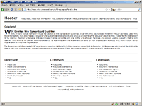

Content
W3C Develops Web Standards and Guidelines
 W3C primarily pursues its mission through the creation of Web standards and guidelines. Since 1994, W3C has published more than 110 such standards, called W3C Recommendations. W3C also engages in education and outreach, develops software, and serves as an open forum for discussion about the Web. In order for the Web to reach its full potential, the most fundamental Web technologies must be compatible with one another and allow any hardware and software used to access the Web to work together. W3C refers to this goal as “Web interoperability.” By publishing open (non-proprietary) standards for Web languages and protocols, W3C seeks to avoid market fragmentation and thus Web fragmentation.
Tim Berners-Lee and others created W3C as an industry consortium dedicated to building consensus around Web technologies. Mr. Berners-Lee, who invented the World Wide Web in 1989 while working at the European Organization for Nuclear Research (CERN), has served as the W3C Director since W3C was founded, in 1994.